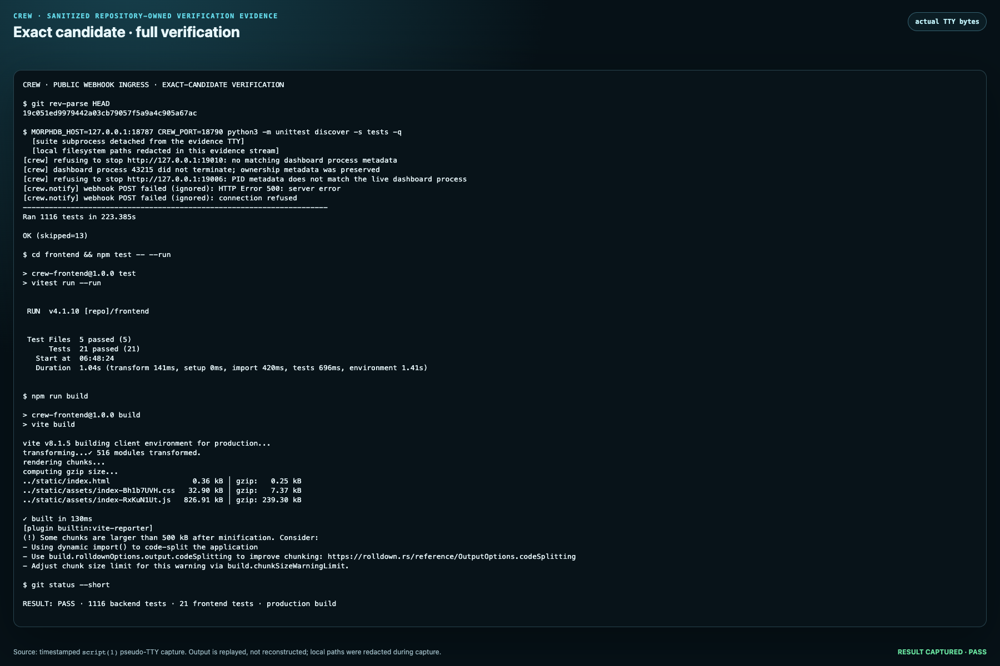

The complete path
Why the boundary stays small
crew ingress run; pipe
EOF also stops the child after hard parent death.
Verification
Real Internet lifecycle
Exact timestamped TTY output, replayed at 4×: public HTTPS, two-target durable delivery, replay, rotation, closed control paths, and clean shutdown.

Exact-candidate suite
The candidate SHA, 1,116 backend tests, 21 frontend tests, and production build are visible in the repository-owned screenshot.
1,116backend tests passed
21frontend tests passed
202real public hook accepted
4× 404control paths stayed closed